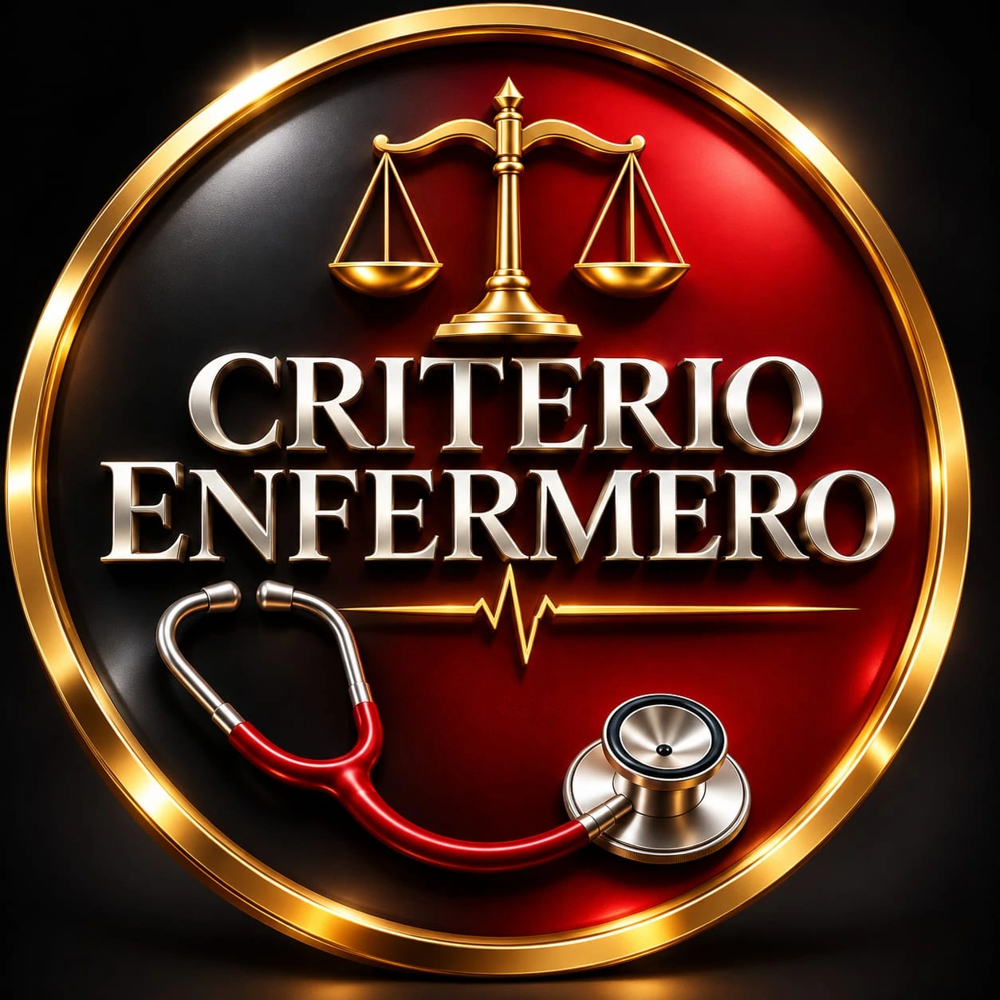

Curso de ejemplo
Gestión y liderazgo
Liderazgo y gestión de equipos de enfermería
Una introducción al mando medio, la conducción de turnos y la toma de decisiones en el servicio.
Pedir información
Criterio EnfermeroFormación · Conocimiento · Innovación en Enfermería
Formación profesional, desarrollo académico, asesoramiento y producción de conocimiento para fortalecer la práctica de enfermería.
Quiénes somos
Criterio Enfermero es el espacio de formación, consultoría y producción de conocimiento de la Prof. Lic. Carolina Guerra Giovanetti, en Córdoba.
Profesora y licenciada en Enfermería, especializada en Enfermería Legal y experta en Calidad y Seguridad del Paciente. Se desempeña como mando medio y tiene trayectoria en enfermería ocupacional. Es conferencista, cofundadora y Secretaria de Capacitación de la Sociedad de Enfermería Legal y Forense de la República Argentina (SELF).
Durante casi dieciocho años se desempeñó en el Hospital de Clínicas José de San Martín (Universidad de Buenos Aires). Allí ejerció jefaturas de unidad —entre ellas Neurocirugía, Terapia Intensiva, Cuidados Cardiocoronarios Intensivos y la Planta Obstétrica— y fue enfermera jefe del Departamento de Programas de calidad de atención.
Su trabajo parte de una convicción: el cuidado se sostiene en el criterio profesional, la evidencia y el marco normativo vigente.
Campos de trabajo
El campus y la consultoría se organizan en torno a los ejes que atraviesan su práctica y su enseñanza.
Conducción de equipos, procesos asistenciales y toma de decisiones en el servicio de enfermería.
02Mejora continua, indicadores, protocolos y una cultura que anticipa el daño evitable.
03Marco normativo, registro, responsabilidad profesional y el lema de formar para saber hacer.
04Cuidado de la salud de las personas en el ámbito del trabajo, prevención y articulación interdisciplinaria.
05El juicio clínico como método: interpretar, fundamentar y actuar con la mejor evidencia disponible.
Formación · Campus
El campus de Criterio Enfermero se integra a este sitio: los cursos viven en su marca y en su dominio, con aula del alumno, certificación y cobro a través de Mercado Pago. Lo que sigue es una muestra de cómo se vería la oferta.
Al completar un curso, el campus emite un certificado con la marca de Criterio Enfermero.
Inscripción en pesos, con los medios de pago habituales en Argentina. En esta demo no se muestran aranceles ni se realiza ningún cobro.
Gestión y liderazgo
Una introducción al mando medio, la conducción de turnos y la toma de decisiones en el servicio.
Pedir informaciónCalidad y seguridad del paciente
Protocolos, indicadores y una mirada del cuidado que anticipa el evento adverso evitable.
Pedir informaciónEnfermería legal y forense
Normativa, registro y responsabilidad profesional, con el criterio como eje de la práctica.
Pedir informaciónEnfermería ocupacional
Vigilancia de la salud, prevención de riesgos y trabajo articulado en el entorno de trabajo.
Pedir informaciónPráctica basada en la evidencia
Cómo leer, interpretar y aplicar la evidencia sin reemplazar el juicio profesional.
Pedir informaciónConsultoría
Asesoramiento para direcciones, supervisiones y equipos que precisan ordenar procesos, fortalecer la seguridad del paciente y sostener la práctica dentro del marco legal vigente.
Revisión de procesos asistenciales, indicadores y cultura de seguridad, con foco en el cuidado cotidiano del servicio.
Orientación sobre normativa aplicable, documentación clínica y responsabilidad profesional del equipo de enfermería.
Apoyo al mando medio en la organización del trabajo, la conducción de turnos y la formación interna.
Capacitaciones a medida para instituciones, articuladas con las áreas del campus y las necesidades del servicio.
Investigación y publicaciones
Selección de asuntos que la Prof. Lic. Guerra Giovanetti ha trabajado en publicaciones y espacios de formación abiertos. Las fichas son de carácter ilustrativo para esta demo.
Criterio clínico
Identificar el riesgo no es un trámite: las escalas ordenan la mirada, pero el juicio clínico define la acción.
Seguridad del paciente
Cuidados de enfermería para prevenir infecciones asociadas al uso del catéter, con base en la normativa nacional vigente.
Buenas prácticas
El estándar de cuidado en accesos venosos periféricos, a partir de la resolución ministerial que lo consagra en el país.
Marco normativo
Qué habilita y qué exige el decreto reglamentario a la hora de ejercer y de fundamentar el quehacer profesional.
Normativa sanitaria
La Ley Nicolás y su cruce con la seguridad del paciente y los deberes del equipo de salud.
Recursos
En el sitio definitivo estos documentos se podrán descargar. Acá se muestran como muestra de la sección, sin archivo adjunto.
Ficha de orientación para un registro claro, oportuno y defendible.
Lista de verificación de apoyo para el cuidado cotidiano en el servicio.
Recordatorio para interpretar Braden, Norton o EMINA sin reducir al paciente a un puntaje.
Referencias de orientación sobre incumbencias y normativa de calidad y seguridad.
Contacto
Consultas por formación, consultoría o el campus. Córdoba, Argentina.
Si te interesa un curso, una asesoría para tu institución o querés conocer el campus, escribinos por el canal que te resulte más cómodo.